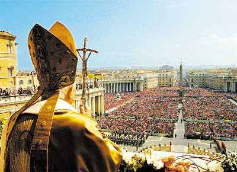
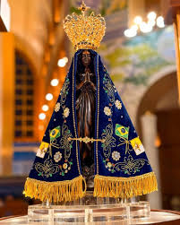
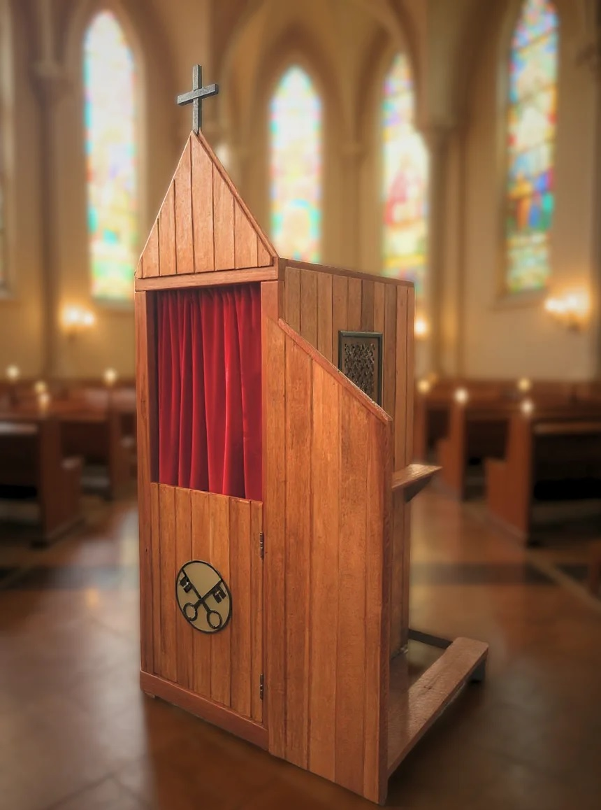

A Igreja Católica é a comunidade fundada por Jesus Cristo sobre São Pedro. Ela preserva a fé apostólica
recebida dos apóstolos e vive a sua missão através da liturgia, dos sacramentos e da oração.
O primeiro líder da Igreja foi São Pedro, escolhido pelo próprio Jesus. Desde então, a Igreja continua
sua missão na sucessão apostólica dos papas, bispos e sacerdotes.
A Igreja não é apenas um templo — é o Corpo de Cristo reunido no sacrifício da Eucaristia, na tradição
viva e na comunhão dos fiéis.
Deus - Pai, Criador do Universo
Deus é o ser supremo, infinito, eterno e todopoderoso. Ele é o criador de tudo que existe - do universo,
da natureza e de todas as pessoas.
Atributos de Deus:
Onipotente: Todo-poderoso, pode fazer tudo
Onisciente: Conhece tudo, passado, presente e futuro
Onipresente: Está em todos os lugares ao mesmo tempo
Eterno: Não tem começo nem fim
Perfeito: Sem falhas, imperfeições ou pecado
Benevolente: Bom, amoroso e misericordioso
Justo: Premia o bem e pune o mal
Deus e o Amor: Na Bíblia, está escrito que "Deus é amor". Ele ama profundamente toda a
humanidade e deseja nossa salvação e felicidade.
A Santíssima Trindade
A Trindade é um dos mistérios mais profundos da fé católica. Significa que Deus é Um em três
pessoas (Uma substância, três pessoas distintas):
As Três Pessoas da Trindade:
1. Deus Pai
O criador de todas as coisas. É o Pai celestial que nos ama e nos cuida. Representa a onipotência e a
autoridade divina.
2. Deus Filho (Jesus Cristo)
É Deus encarnado em forma humana. Jesus é o Filho de Deus que veio à terra para salvar a humanidade
através de sua morte e ressurreição.
3. Deus Espírito Santo
É o amor e a graça de Deus que vive nos corações dos fiéis. Guia, inspira e fortalece os cristãos na
jornada de fé.
Como Entender a Trindade?
É um mistério que não pode ser totalmente compreendido pela razão humana. Algumas comparações ajudam:
A água: Pode ser gelo (sólido), água (líquido) e vapor (gás) - mas é sempre H₂O
A luz do sol: É uma, mas tem três propriedades: calor, luz e energia
Um ser humano: É uma pessoa, mas tem corpo, alma e espírito
Da mesma forma, Deus é Um, mas existe em três pessoas distintas que trabalham juntas em perfeita
harmonia.
Jesus Cristo - O Filho de Deus

Quem é Jesus?
Jesus Cristo é o Filho de Deus encarnado. Ele é verdadeiro Deus e verdadeiro homem. Nasceu de Maria
Virgem há aproximadamente 2026 anos.
A Vida de Jesus
Nascimento: Nasceu em Belém de pais humildes (Maria e José). Sua vinda era esperada há
séculos pelos profetas do Antigo Testamento.
Ministério: Aos 30 anos, começou seu ministério público pregando sobre o Reino de Deus,
realizando milagres e ensinando valores como amor ao próximo, perdão e compaixão.
Apóstolos: Escolheu 12 apóstolos (discípulos) para ajudá-lo a difundir suas mensagens.
Os Milagres de Jesus
Jesus realizou muitos milagres que comprovam sua divindade:
Transformar água em vinho (Casamento de Caná)
Multiplicar pães e peixes para alimentar multidões
Curar doentes (cegos, paralíticos, leprosos)
Ressuscitar mortos (Lázaro)
Acalmar a tempestade
Expulsar demônios
A Paixão, Morte e Ressurreição
Paixão: Jesus foi preso, julgado injustamente e condenado à morte pelo governador Pôncio
Pilatos.
Morte: Foi crucificado no Calvário (Gólgota) como sacrifício pelos pecados de toda a
humanidade. "Porque Deus amou o mundo de tal forma que deu o seu Filho unigênito, para que todo aquele
que nele crê não pereça, mas tenha a vida eterna."
Ressurreição: No terceiro dia após sua morte, Jesus ressuscitou dos mortos, vencendo o
pecado e a morte. É a base da esperança cristã.
Ascensão: Quarenta dias após a ressurreição, Jesus subiu aos céus e está sentado à
direita de Deus Pai.
Por Que Jesus Morreu?
Jesus morreu para salvar a humanidade do pecado. Seu sacrifício na cruz é o ato de amor supremo. Pela sua
morte e ressurreição, todo aquele que acredita nele é perdoado e pode ter vida eterna.
Jesus Hoje
Jesus está vivo nos céus. Está presente:
Na Eucaristia (o Corpo e Sangue de Cristo)
Na Igreja através de seus membros
No coração dos fiéis através do Espírito Santo
Na Palavra de Deus (Bíblia)
Os 10 Mandamentos
Os Dez Mandamentos são as leis divinas dados por Deus a Moisés no Monte Sinai. São a base da moral
católica e ensinam como viver dignamente.
Os 10 Mandamentos da Lei de Deus:
Amar a Deus sobre todas as coisas - Deus deve estar em primeiro lugar em nossas
vidas
Não tomar o nome de Deus em vão - Respeitar o nome de Deus, não usar em maldições
ou juras falsas
Guardar domingos e festas de guarda - Participar da Missa no domingo e honrar Deus
Honrar pai e mãe - Respeitar e cuidar dos pais
Não matar - Respeitar a vida humana, não prejudicar ninguém
Não cometer adultério - Ser fiel no casamento
Não roubar - Respeitar a propriedade alheia
Não dar falso testemunho - Não mentir, especialmente em juízo
Não cobiçar a mulher do próximo - Não desejar o cônjuge de outro
Não cobiçar os bens alheios - Não invejar o que os outros têm
Resumo dos Mandamentos
Jesus resumiu os 10 Mandamentos em dois grandes mandamentos:
Amar a Deus com todo coração, alma e mente (Primeiros 3 Mandamentos)
Amar o próximo como a si mesmo (Últimos 7 Mandamentos)
Estes dois mandamentos contêm toda a Lei e os Profetas.
O Rosário - Oração Poderosa
O que é o Rosário?
O Rosário é uma forma de oração muitíssimo venerada na Igreja Católica. É ao mesmo tempo uma meditação e
uma súplica. Através dele, os fiéis contemplam os principais mistérios da vida de Jesus e de Maria.
Como o Rosário é Composto?
O Rosário é composto por vinte mistérios que contemplam os principais acontecimentos da vida de Jesus Cristo e da Virgem Maria. Esses mistérios são divididos em quatro grupos: Gozosos, Luminosos, Dolorosos e Gloriosos, cada um com cinco mistérios. A oração é rezada por meio de dezenas formadas por um Pai-Nosso, dez Ave-Marias e um Glória ao Pai, conduzindo os fiéis à meditação, à oração e ao aprofundamento da fé cristã.
1. Mistérios Gozosos (Alegres)
Meditam sobre a alegria da encarnação e infância de Jesus:
A Anunciação (anjo anuncia que Maria terá um filho)
A Visitação (Maria visita sua prima Isabel)
O Nascimento de Jesus
A Apresentação de Jesus no templo
O Menino Jesus no templo
2. Mistérios Luminosos (da Luz)
Meditam sobre o ministério público de Jesus:
O Batismo de Jesus
A Manifestação de Jesus em Caná
O Anúncio do Reino de Deus
A Transfiguração de Jesus
A Instituição da Eucaristia
3. Mistérios Dolorosos
Meditam sobre o sofrimento de Jesus:
A Agonia de Jesus no Horto
A Flagelação de Jesus
A Coroação de Espinhos
A Crucificação de Jesus
O Ressurreição de Jesus
4. Mistérios Gloriosos
Meditam sobre a glória de Jesus e Maria:
A Ressurreição de Jesus
A Ascensão de Jesus
A Descida do Espírito Santo (Pentecostes)
A Assunção de Maria
A Coroação de Maria Rainha do Céu
Como Rezar o Rosário
Reza-se o Rosário com um terço (colar com contas). O processo é:
Comece com o sinal da cruz
Reze o Credo dos Apóstolos
Reze um Pai-Nosso
Reze três Ave-Marias (pela fé, esperança e caridade)
Reze um Glória ao Pai
Anuncia o primeiro mistério e reze um Pai-Nosso
Reze 10 Ave-Marias meditando no mistério
Reze um Glória ao Pai
Repita para cada um dos 5 mistérios
Termine com orações de encerramento
Por Que Rezar o Rosário?
Fortalece a devoção a Maria
Medita sobre a vida de Jesus
Traz paz e consolo espiritual
Busca a intercessão de Maria
Combate o mal espiritual
Une toda a comunidade cristã
Promessas do Rosário
A Igreja ensina que rezar o Rosário com fé traz muitas graças, entre elas:
Proteção contra o mal
Cura de doenças
Conversão de pecadores
Paz nas famílias
Salvação da alma
Meditação e Contemplação
O que é Meditação Cristã?
Meditação é uma forma profunda de oração em que a pessoa se retira do mundo, silencia a mente e busca
encontrar a presença de Deus. É diferente da meditação oriental - é centrada em Cristo e em sua Palavra.
Diferença Entre Meditação e Contemplação
Meditação: É um ato ativo da mente. Você pensa, reflete e pondera sobre as palavras de
Deus, buscando compreendê-las e aplicá-las em sua vida.
Contemplação: É um ato passivo. Você simplesmente permanece silenciosamente na presença
de Deus, sem pensar ou raciocinar, apenas descansando em sua presença.
Tipos de Meditação Cristã
1. Lectio Divina (Leitura Divina)
É uma forma antiga de meditação que segue 4 passos:
Lectio: Ler lentamente um trecho da Bíblia
Meditatio: Refletir e meditar sobre o que foi lido
Oratio: Orar, respondendo a Deus com suas próprias palavras
Contemplatio: Descansar silenciosamente na presença de Deus
2. Meditação sobre os Mistérios
Meditar sobre os eventos da vida de Jesus (como no Rosário) visualizando a cena e como você estaria
presente nela.
3. Oração Centrada em Deus (Contemplative Prayer)
Repetir uma palavra sagrada (como "Jesus", "Paz" ou "Amor") enquanto descansa na presença de Deus.
Como Praticar a Meditação Cristã
Preparação:
Escolha um lugar tranquilo e silencioso
Sente-se confortavelmente
Faça o sinal da cruz
Peça ao Espírito Santo para guiar sua oração
Meditação:
Leia lentamente um trecho da Bíblia
Reflita sobre o significado das palavras
Pergunte a si mesmo: "O que Deus quer me ensinar?"
Deixe as palavras ressoearem em seu coração
Resposta:
Fale com Deus em suas próprias palavras
Expresse seus sentimentos e desejos
Peça ajuda para viver o que aprendeu
Descanse silenciosamente em sua presença
Benefícios da Meditação Cristã
Aprofunda o conhecimento de Deus
Traz paz interior e serenidade
Fortalece a fé e a confiança em Deus
Ajuda a discernir a vontade de Deus
Transforma a vida espiritual
Cura emoções feridas
Traz alegria e esperança
Mestres da Meditação Cristã
Grandes santos como Santo Inácio de Loyola, Santa Teresa de Ávila e São João da Cruz deixaram
ensinamentos profundos sobre meditação e contemplação que ainda guiam os cristãos hoje.
História da Igreja
A Igreja Católica teve início com a missão de Jesus Cristo e os ensinamentos transmitidos aos apóstolos, especialmente a São Pedro, considerado o primeiro papa. Após a morte e ressurreição de Jesus, os apóstolos começaram a anunciar o Evangelho pelo mundo.
Nos primeiros séculos, os cristãos sofreram perseguições no Império Romano, mas permaneceram firmes na fé. No ano de 313, o imperador Constantino concedeu liberdade religiosa aos cristãos por meio do Édito de Milão.
Com o passar do tempo, a Igreja cresceu, construiu comunidades, mosteiros e catedrais, levando o cristianismo para diversos povos e culturas. Durante a Idade Média, teve grande influência na educação, arte e caridade.
Ao longo da história, a Igreja enfrentou desafios, divisões e reformas, mas continuou sua missão de anunciar o Evangelho, celebrar os sacramentos e ajudar os necessitados.
Atualmente, a Igreja Católica está presente em praticamente todo o mundo, sendo guiada pelo papa e dedicada à fé, à paz e ao amor ao próximo.
No início, os cristãos foram perseguidos, mas mesmo assim a fé cresceu. Com o tempo, a Igreja se espalhou
pelo mundo.
Momentos Importantes:
O crescimento do cristianismo no Império Romano
A organização da doutrina
Grandes desafios e mudanças ao longo dos séculos
Hoje, a Igreja Católica está presente no mundo inteiro.
Santa Rita de Cássia - Santa das Causas Impossíveis
Santa Rita de Cássia, santa das causas impossíveis
Santa Rita de Cássia foi uma santa italiana conhecida por sua fé, paciência e confiança em Deus, mesmo
diante de grandes sofrimentos. Viveu no século 15 e, desde jovem, sonhava em ser freira, mas não foi
permitida por sua família e acabou entrando em um casamento difícil.
Após a morte do marido e de seus filhos, conseguiu ingressar na vida religiosa. Sua vida no convento foi
marcada por muita oração, humildade e amor a Deus.
Entre os fatos e milagres associados a ela, destaca-se a tradição de que uma roseira seca teria voltado a
florescer por sua fé, mesmo fora de época, simbolizando esperança e vida nova. Também há relatos de que
cultivava e cuidava de plantas com grande dedicação, sendo associada especialmente às rosas.
Depois de sua morte, muitos fiéis passaram a relatar graças alcançadas por sua intercessão,
principalmente em causas consideradas impossíveis, o que a tornou conhecida como a "santa das causas
impossíveis".
Seu reconhecimento oficial pela Igreja ocorreu com sua canonização pelo papa Leão XIII, no ano de 1900.
Hoje, é muito venerada e lembrada como exemplo de fé, perseverança e confiança em Deus.
Como Alguém se Torna Santo?
Um ponto importante: Na Igreja Católica, ninguém é declarado santo em vida. O processo
só começa depois da morte da pessoa.
Durante a vida, porém, é essencial que ela tenha sido um verdadeiro exemplo de fé, amor ao próximo e
fidelidade a Deus. Ou seja, alguém que viveu o Evangelho de forma concreta no dia a dia.
Etapas do Processo de Canonização
Após a morte, a Igreja analisa com muito cuidado:
Sua vida e suas atitudes
Seus ensinamentos e escritos
Seu testemunho cristão
A fama de santidade entre as pessoas
Se tudo isso confirma que ela viveu de forma extraordinária, inicia-se o caminho até a santidade, que
passa pelas etapas:
Servo de Deus - Primeira fase do reconhecimento
Venerável - A Igreja reconhece suas virtudes
Beato - É beatificado, e pode ser venerado localmente
Santo - É canonizado, reconhecido por toda a Igreja como santo
Esse processo também pode envolver a confirmação de milagres atribuídos à intercessão da pessoa.
Em Resumo
Um santo não é alguém "perfeito", mas alguém que, em vida, buscou a Deus com sinceridade e foi exemplo
para os outros — e que, após sua morte, foi reconhecido pela Igreja por essa vida de fé.
Nossa Senhora – Mãe de Jesus

Nossa Senhora Aparecida, padroeira do Brasil
Maria é a mãe de Jesus Cristo e possui um lugar especial no coração dos católicos. Ela é venerada como a
Mãe de Deus e intercessora dos fiéis. Na Igreja, Maria é chamada de Nossa Senhora.
As Diferentes Manifestações de Nossa Senhora
Ao longo da história, há relatos de aparições de Maria em diferentes lugares do mundo. Cada aparição tem
um nome especial e significado próprio:
Nossa Senhora de Fátima (Portugal, 1917)
Apareceu a três crianças em Fátima e pediu oração e conversão. É uma das aparições mais famosas do mundo.
Muitos peregrinos visitam Fátima em busca de graças e cura.
Nossa Senhora Aparecida (Brasil, 1717)
Padroeira do Brasil. Sua imagem foi encontrada em um rio por pescadores. É a padroeira oficial do Brasil
e tem grande devoção no país inteiro.
Nossa Senhora de Lourdes (França, 1858)
Apareceu a Santa Bernadete. O local tornou-se famoso por milagres de cura. Milhões de peregrinos visitam
Lourdes anualmente em busca de graças.
Nossa Senhora de Guadalupe (México, 1531)
Apareceu a Santo Inácio, um indígena mexicano. É muito venerada na América Latina, especialmente no
México. Seu santuário é um dos mais visitados do mundo.
Nossa Senhora da Conceição
Representa Maria sem mancha de pecado original. É celebrada no dia 8 de dezembro e é venerada em várias
partes do mundo, especialmente em Portugal e Brasil.
Nossa Senhora da Abadia
Venerada especialmente em Goiás, Brasil. É conhecida por sua intercessão nos pedidos de proteção e
bênção.
Nossa Senhora do Carmo
Padroeira da Ordem do Carmo. É venerada por sua proteção especial e seu escapulário é usado por muitos
fiéis como sinal de devoção.
Por Que Tantas Aparições e Manifestações de Nossa Senhora?
Isso é uma pergunta muito importante. Na verdade, não são "várias Nossas Senhoras", mas sim a
mesma Maria em diferentes manifestações, aparecendo em locais e épocas distintas conforme
as necessidades de cada comunidade.
1. Proximidade com Todos os Povos
Maria, como Mãe de Jesus e Mãe da Igreja, está presente em todos os lugares. As aparições mostram que ela
se importa com cada povo, cada cultura e cada comunidade. Ela se manifesta onde há pessoas que precisam
de ajuda espiritual.
2. Mensagens Específicas para Cada Tempo
Cada aparição traz uma mensagem apropriada para aquele momento histórico. Por exemplo:
Fátima (1917): Durante a 1ª Guerra Mundial, pedia conversão e oração pela paz
Aparecida (1717): No Brasil colonial, mostrou que Maria estava com os brasileiros
Lourdes (1858): Época de dificuldades, trouxe esperança através de milagres de cura
3. Diferentes Contextos Culturais
Maria se adapta ao contexto de cada povo. Não muda sua essência, mas a forma como aparece e as mensagens
refletem a realidade local:
No Brasil, apareceu como Nossa Senhora Aparecida para o povo indígena e escravizado
No México, apareceu a Santo Inácio (indígena) como Nossa Senhora de Guadalupe
Em Fátima, Portugal, veio com mensagens sobre a Europa
4. Invocações Especiais Conforme o Pedido
Os fiéis invocam Nossa Senhora sob diferentes títulos conforme sua necessidade:
Rezam para Nossa Senhora de Fátima pela paz e proteção
Rezam para Nossa Senhora de Lourdes por cura e milagres
Rezam para Nossa Senhora Aparecida pedindo bênção para o Brasil
Rezam para Nossa Senhora do Carmo pedindo proteção especial
Mas todas as orações vão para a mesma Maria, que intercede por nós junto a Jesus e a Deus.
5. Realidade Teológica
A Igreja ensina que Maria é uma pessoa única, mas pode se manifestar em diferentes
tempos, lugares e formas. É como quando você fala com sua mãe: ela é sempre a mesma pessoa, mas estará
presente em diferentes momentos de sua vida, oferecendo apoio onde você mais precisa.
6. Intercessão Contínua
Maria está viva no céu junto a Deus e está sempre intercedendo pela humanidade. As aparições são sinais
visíveis dessa intercessão contínua. Ela não abandona seus filhos, está presente de muitas formas -
através de aparições, milagres e da presença espiritual em nossas vidas.
Em Resumo
As várias manifestações de Nossa Senhora não significam que existem "várias Marias". É a mesma
Mãe de Jesus presente em todos os lugares e tempos, se comunicando com seus filhos de
maneiras que eles compreendem e necessitam, sempre trazendo mensagens de fé, esperança e conversão.
Como a Igreja Trata as Aparições
A Igreja Católica analisa cuidadosamente cada aparição. Nem todas são reconhecidas como autênticas. A
Igreja investiga se:
A aparição está de acordo com a fé católica
Há autênticas mudanças na vida espiritual das pessoas
Existem milagres verificados
O testemunho é digno de confiança
Doutrina e Ensinamentos
Doutrina e ensinamentos da Igreja
A doutrina da Igreja é o conjunto de ensinamentos que orientam a vida dos católicos.
Ela inclui:
Os mandamentos
O amor ao próximo
A importância do perdão
A busca por uma vida santa
A Igreja ensina como viver de acordo com a vontade de Deus.
Os 7 Sacramentos
Celebração dos sacramentos na igreja
Os 7 Sacramentos são sinais sagrados instituídos por Jesus Cristo e confiados à Igreja Católica para transmitir a graça de Deus aos fiéis. Eles acompanham a vida do cristão desde o nascimento até os momentos finais, fortalecendo a fé, a comunhão com Deus e a vivência do Evangelho.
1. Batismo
O que é: O primeiro sacramento que torna alguém membro da Igreja Católica.
Como funciona: A água é derramada na cabeça do batizando (ou ele é mergulhado em água) enquanto o padre/diácono reza em nome da Trindade (Pai, Filho e Espírito Santo).
O que faz: Limpa do pecado original, abre as portas do céu e insere a pessoa na comunidade cristã.
Quando: Normalmente feito logo após o nascimento, mas pode ser feito em qualquer idade.
2. Crisma
O que é: Sacramento que confirma a graça do batismo e fortalece o batizado na fé.
Como funciona: O bispo (ou padre autorizado) unge a testa do crismado com óleo sagrado (crisma) enquanto invoca o Espírito Santo.
O que faz: Batiza a pessoa no Espírito Santo, capacitando-a a ser testemunha de Cristo e soldado valente da fé.
Quando: Normalmente feito entre 12 e 18 anos, ou em preparação para o matrimônio.
3. Eucaristia
O que é: O sacramento em que o pão e o vinho se tornam o Corpo e Sangue de Cristo (transsubstanciação).
Como funciona: O padre, durante a Missa, pronuncia as palavras de Jesus: " Isto é o meu
corpo" e "Isto é o meu sangue" . Através do poder do Espírito Santo e pelas mãos do sacerdote, o pão e o
vinho são transformados.
O que faz:
Une o cristão a Cristo de forma mística
Traz perdão dos pecados veniais (leves)
Fortalece a alma e o espírito
Alimenta espiritualmente o cristão
Prepara para a vida eterna
Quando: Pode ser recebida frequentemente. Os católicos devem receber pelo menos uma
vez por ano (na Páscoa). Primeira comunhão é normalmente aos 7 anos.
4. Confissão (Reconciliação)
O que é: Sacramento onde o católico confessa seus pecados a um padre e recebe o
perdão de Deus.
Como funciona:
O penitente entra no confessionário
Começa com "Bênção" e diz quanto tempo faz da última confissão
Confessa seus pecados com sinceridade
O padre oferece conselho espiritual (penitência)
O padre pronuncia a absolvição: "Seus pecados estão perdoados"
O que faz:
Perdoa todos os pecados confessados com sinceridade
Restaura a relação com Deus
Traz paz de consciência
Limpa da culpa e da vergonha
Quando: Antes de receber comunhão (se em pecado mortal). Os católicos devem
confessar pelo menos uma vez por ano. Recomenda-se frequentemente.
5. Matrimônio
O que é: Sacramento onde dois cristãos se unem diante de Deus e da Igreja em
casamento.
Como funciona: Os noivos se prometem fidelidade, amor e abertura aos filhos diante
de Deus e da Igreja. O sacramento é administrado pelos próprios noivos um ao outro, com o padre como
testemunha.
O que faz:
Sela o compromisso matrimonial
Abençoa a vida dos esposos
Possibilita uma família cristã
Torna indissolúvel o vínculo (para vida toda)
Quando: Quando duas pessoas se amam e desejam passar a vida juntas.
6. Ordem (Ordenação)
O que é: Sacramento através do qual um homem é ordenado padre ou diácono.
Como funciona: O bispo impõe as mãos sobre o ordinando enquanto invoca o Espírito
Santo. O homem recebe poderes sagrados para servir a Igreja.
O que faz:
Confere ao padre o poder de consagrar a Eucaristia
Confere o poder de perdoar pecados
Ordena ao diácono para servir a comunidade
Marca permanentemente a alma (caráter indestrutível)
Quando: Quando um homem se sente chamado por Deus para o sacerdócio.
7. Unção dos Enfermos
O que é: Sacramento de cura e conforto para os doentes graves ou idosos.
Como funciona: O padre unge a testa e as mãos do enfermo com óleo sagrado enquanto
reza pela cura e pelo conforto.
O que faz:
Traz conforto espiritual na doença
Pode trazer cura física (se for vontade de Deus)
Oferece força para suportar o sofrimento
Prepara para a morte de forma digna (se necessário)
Perdoa pecados quando a confissão não é possível
Quando: Quando alguém está em perigo de morte por doença, idade avançada ou
acidente.
A Eucaristia - O Corpo e Sangue de Cristo
A Eucaristia - Corpo e Sangue de Cristo
O Mistério da Eucaristia
A Eucaristia é considerada o "coração" da vida cristã católica. É chamada de "O Santíssimo Sacramento".
O que Jesus disse sobre a Eucaristia
Na Última Ceia, Jesus disse aos apóstolos: "Tomai e comei: isto é o meu corpo. Bebei todos: isto é o meu
sangue".
Transsubstanciação - O Milagre da Eucaristia
A Igreja ensina que, quando o padre pronuncia as palavras de Jesus ("Isto é o meu corpo"), ocorre um
milagre:
A substância do pão muda para o Corpo de Cristo
A substância do vinho muda para o Sangue de Cristo
Os acidentes (aparência) continuam sendo pão e vinho
Então, o que você come é realmente o Corpo de Cristo, não apenas simbolicamente, mas substancialmente.
Por Que os Católicos Veneram a Eucaristia?
Porque é Jesus Cristo em pessoa. É por isso que:
Se ajoelham quando a Eucaristia passa
Adoram o Santíssimo Sacramento
Tratam com reverência máxima
As hóstias consagradas são guardadas no sacrário (um cofre sagrado)
Os Efeitos Espirituais da Eucaristia
União com Cristo: Você se une misteriosamente a Jesus
Perdão de pecados: A Eucaristia perdoa pecados veniais (leves)
Graça: Recebe força divina para viver melhor
Vida eterna: Jesus promete: "Quem comer de meu corpo viverá eternamente"
Quem Pode Receber a Eucaristia?
Para receber dignamente a Eucaristia, você deve:
Ser batizado católico
Estar em estado de graça (sem pecado mortal)
Ter fé na presença real de Cristo
Estar em jejum (não ter comido ou bebido nada, exceto água, por 1 hora)
Se você cometeu um pecado mortal, deve confessar antes de receber a Eucaristia.
Confissão - O Sacramento da Reconciliação

Confessionário na Igreja
Por Que Confessar?
Jesus disse aos apóstolos: "Recebei o Espírito Santo. Aqueles cujos pecados perdoardes, estão perdoados;
aqueles cujos pecados retiverdes, estão retidos".
A confissão é o sacramento onde Cristo perdoa nossos pecados através de seu ministro, o padre.
Como Fazer uma Boa Confissão
Passo 1: Preparação
Faça um exame de consciência (pense em seus pecados)
Peça ao Espírito Santo para lhe ajudar a lembrar
Sinta verdadeiro arrependimento
Passo 2: Chegando ao Confessionário
Escolha um padre ou confessionário
Entre ou ajoelhe-se na grade do confessionário
Passo 3: O Ato Penitencial
Diga: "Bênção, Senhor, porque pequei" ou similar.
Passo 4: Confissão dos Pecados
Diga ao padre quanto tempo faz da última confissão ("Faz 3 meses que não confesso")
Confesse seus pecados de forma clara e sincera
Mencione quantas vezes cometeu cada pecado
Seja honesto - o padre está lá para ajudar, não para julgar
Passo 5: Conselho e Penitência
O padre oferecerá conselho espiritual
Receberá uma penitência (normalmente rezas ou boas ações)
Passo 6: Ato de Contrição
Reze o Ato de Contrição (arrependimento).
Passo 7: Absolvição
O padre dirá: "Deus Pai todo-poderoso tem compaixão de nós, e pelos méritos da Paixão de seu Filho nos
perdoa os pecados. Pela autoridade de nosso Senhor Jesus Cristo, que quis voltar à Igreja... eu vos
absolvo dos vossos pecados. Em nome do Pai, do Filho e do Espírito Santo."
Passo 8: Penitência
Faça a penitência que foi dada (rezar determinadas orações ou fazer caridades).
Tipos de Pecados
Pecado Mortal
É grave e afasta totalmente de Deus. Matam a alma espiritualmente. Exemplos: matar, roubar com intenção,
adultério, blasfêmia grave, recusar a fé.
Consequência: Impede receber a Eucaristia até confessar.
Pecado Venial
É leve, não mata a graça de Deus completamente, mas enfraquece a alma. Exemplos: mentira pequena,
desobediência leve, perda de paciência.
Consequência: Enfraquece a fé, mas não impede comunhão.
O Sigilo da Confissão
O padre tem o dever absoluto de guardar sigilo sobre tudo que ouve na confissão. Nunca pode revelar os
pecados confessados, nem mesmo em perigo de morte. Este é um segredo sagrado.
A Missa - A Celebração Central da Igreja
A Santa Missa é a celebração mais importante da Igreja Católica, pois nela os fiéis recordam e celebram o
sacrifício, a morte e a ressurreição de Jesus Cristo. É um momento de oração, comunhão e encontro com
Deus, onde a comunidade se reúne para ouvir a Palavra e participar da Eucaristia.
A Missa é dividida em duas partes principais:
Liturgia da Palavra: leitura da Bíblia, salmo, Evangelho e reflexão;
Liturgia Eucarística: apresentação do pão e do vinho, consagração e comunhão.
Durante a celebração, os cristãos fortalecem sua fé, agradecem pelas graças recebidas e renovam seu
compromisso de viver os ensinamentos de Cristo. A Missa também expressa união, fraternidade e participação
da comunidade na vida da Igreja.
Primeira Leitura: Normalmente do Antigo Testamento
Salmo: Todos respondem juntos
Segunda Leitura: Do Novo Testamento (Epístolas)
Evangelho: As palavras de Jesus (muito reverenciado)
Homilia: O padre prega sobre as leituras
Credo: Todos proclamam a fé
Oração dos Fiéis: Petições da comunidade
3. Liturgia Eucarística (O Núcleo da Missa)
Preparação do Altar: Pão e vinho são colocados no altar
Prefácio: Ação de graças solene
Sanctus: "Santo, Santo, Santo" - louvor celeste
Consagração: O padre pronuncia as palavras de Jesus sobre o pão e o vinho. AQUI
OCORRE O MILAGRE - pão e vinho se tornam o Corpo e Sangue de Cristo
Memorândum: Memória da Paixão, Morte e Ressurreição de Cristo
Fração do Pão: O padre quebra a hóstia
Comunhão: Todos recebem o Corpo de Cristo
4. Ritos Finais
Oração pós-comunhão
Bênção do padre
Despedida ("Ide em paz")
Canto final
A Importância de Participar da Missa
Cumprir o mandamento de honrar o Senhor (Terceiro Mandamento)
Receber a graça de Deus através dos sacramentos
Estar em comunhão com a Igreja e outros fiéis
Fortalecer a fé e o espírito
Receber a Eucaristia, que é Cristo em pessoa
Obrigação de Ir à Missa
Os católicos têm a obrigação de participar da Missa todos os domingos e dias de festa. Faltar sem motivo
grave é pecado.
Orações
As orações são uma forma de diálogo com Deus, um momento de fé, confiança e aproximação espiritual.
Por meio da oração, os cristãos agradecem, pedem proteção, entregam suas dificuldades e fortalecem
sua relação com Jesus Cristo e com a Igreja Católica.
A oração pode ser feita individualmente ou em comunidade, em silêncio ou em voz alta, em qualquer
lugar e momento. Ela ajuda a trazer paz ao coração, esperança diante das dificuldades e força para
seguir os ensinamentos de Deus.
Principais orações:
Pai-Nosso
Ave-Maria
Glória ao Pai
Credo
Salve Rainha
Rezar ajuda a fortalecer a fé e a manter uma relação com Deus.
Dúvidas Comuns
Momento de reflexão sobre dúvidas
Por que os católicos rezam para os santos?
Porque acreditam que os santos estão junto de Deus e podem interceder por nós.
Por que ir à Missa?
Porque é um encontro com Deus e com a comunidade.
Espírito Santo
Representação do Espírito Santo
O Espírito Santo é a terceira pessoa da Santíssima Trindade, que guia a Igreja e fortalece os cristãos.
Ele é a presença viva de Deus que inspira a oração, o amor e a missão.
Ele desceu sobre os apóstolos no dia de Pentecostes na forma de línguas de fogo, capacitando-os a
anunciar o Evangelho com coragem.
Os 7 dons do Espírito Santo são graças especiais concedidas por Deus para fortalecer a fé, ajudar nas escolhas do dia a dia e conduzir os cristãos no caminho do bem. Esses dons são recebidos de maneira especial no sacramento da Crisma e ajudam a viver os ensinamentos de Jesus Cristo.
Sabedoria – ajuda a valorizar as coisas de Deus acima das coisas do mundo.
Entendimento – permite compreender melhor a Palavra de Deus e a fé.
Conselho – ajuda a fazer escolhas corretas e agir com prudência.
Fortaleza – dá coragem para enfrentar dificuldades e permanecer firme na fé.
Ciência – ajuda a perceber a presença de Deus na criação e na vida.
Piedade – desperta amor, respeito e confiança em Deus e no próximo.
Temor de Deus – ensina a viver com humildade e a evitar o pecado por amor a Deus.
Esses dons fortalecem a vida cristã e ajudam a viver guiado pelo Espírito Santo no dia a dia.
Hierarquia e Ministérios da Igreja
Ordem de Importância na Hierarquia
1. Papa
É o líder supremo da Igreja Católica e Bispo de Roma. Sucede São Pedro e é considerado o representante de
Cristo na Terra. O Papa governa a Igreja, define a doutrina e é a autoridade máxima das decisões
religiosas.
2. Cardeal
São bispos escolhidos pelo Papa para posições de destaque. Os cardeais formam o Colégio Cardinalício e
são responsáveis por eleger o próximo Papa (Conclave).
3. Arcebispo
É um bispo de alta patente, responsável por uma grande região ou arquidiocese. Supervisiona vários bispos
e padres, coordena a fé em sua região e é um pastor principal das comunidades.
4. Bispo
Lidera uma diocese (região eclesiástica) e supervisiona os padres. O bispo tem a responsabilidade de
ensinar a fé, confirmar os fiéis (no sacramento da Crisma) e ordenar novos padres e diáconos. É um
sucessor dos apóstolos.
5. Padre (Sacerdote)
O que é um Sacerdote: Um sacerdote é um homem ordenado pela Igreja para servir a Deus e
à comunidade. O padre é um ministro sagrado que recebe o sacramento da Ordem, que o capacita a realizar
os sacramentos.
Funções do Padre:
Preside a Missa e consagra o pão e o vinho no corpo e sangue de Cristo
Ouve confissões e absolve os pecados
Batiza, realiza casamentos e extrema-unção
Orienta e aconselha a comunidade
Encaminha o povo na fé
Como virar Padre: Um homem deve ter vocação (chamado de Deus), passar por um seminário
(estudos teológicos de 4 a 6 anos), ser aprovado pela Igreja, e receber o sacramento da Ordem. Padres
fazem voto de celibato (não se casam) e prometem obediência à Igreja.
6. Diácono
É um ministro da Igreja que ajuda os padres. Pode ser permanente ou em caminho para ser padre. Anuncia o
Evangelho, distribui a Eucaristia e serve a comunidade em obras sociais.
Vocações Religiosas: Freiras e Monges
Vida de dedicação religiosa
O que é uma Freira (Religiosa)?
Uma freira é uma mulher consagrada a Deus que faz votos religiosos (pobreza, castidade e obediência). Ela
vive em comunidade em um convento ou mosteiro, dedicando-se à oração, ao trabalho e ao serviço.
Como Funciona a Vida de uma Freira:
Votos: Faz três votos principais - pobreza (não possui bens próprios), castidade
(não se casa) e obediência (obedece à superiora e à Igreja)
Vida comunitária: Vive com outras freiras em convento ou mosteiro
Oração: Grande parte do dia é dedicada à oração e contemplação
Trabalho: Trabalha na comunidade, educação, saúde ou obras sociais
Formação: Passa por anos de estudo espiritual antes de fazer votos perpétuos
Como Virar Freira:
Sentir vocação (chamado de Deus)
Entrar em contato com uma congregação religiosa (comunidade de freiras)
Passar pelo período de postulado (aproximadamente 6 meses a 1 ano) - conhecer a
vida religiosa
Passar pelo período de noviciado (2 anos) - aprender a vida religiosa profundamente
Fazer votos temporários (3 a 6 anos)
Fazer votos perpétuos (para toda a vida)
Tipos de Comunidades Religiosas:
Contemplativas: Dedicadas principalmente à oração (vivem isoladas)
Ativas: Trabalham em educação, saúde e missões (servem comunidades)
Mistas: Combinam oração e trabalho
Presbitério na Celebração Litúrgica
O presbitério é a parte da igreja, perto do altar, onde o padre celebra a missa. Geralmente é um pouco
mais alto que o restante e inclui o altar, o local das leituras e a cadeira do celebrante.
Abaixo estão os ministérios leigos (não ordenados) que ajudam na liturgia:
Padre
Preside a Missa, consagra a Eucaristia e distribui a comunhão.
Diácono
Anuncia o Evangelho, ajuda o padre e serve a comunidade.
Acólito
Prepara os objetos sagrados, acende velas e assiste o padre no altar.
Leitor/Ministro
Lê as leituras da Bíblia e as intenções de oração durante a Missa.
Coroinha
Auxilia nas celebrações, acende velas e ajuda a manter o ambiente sagrado.